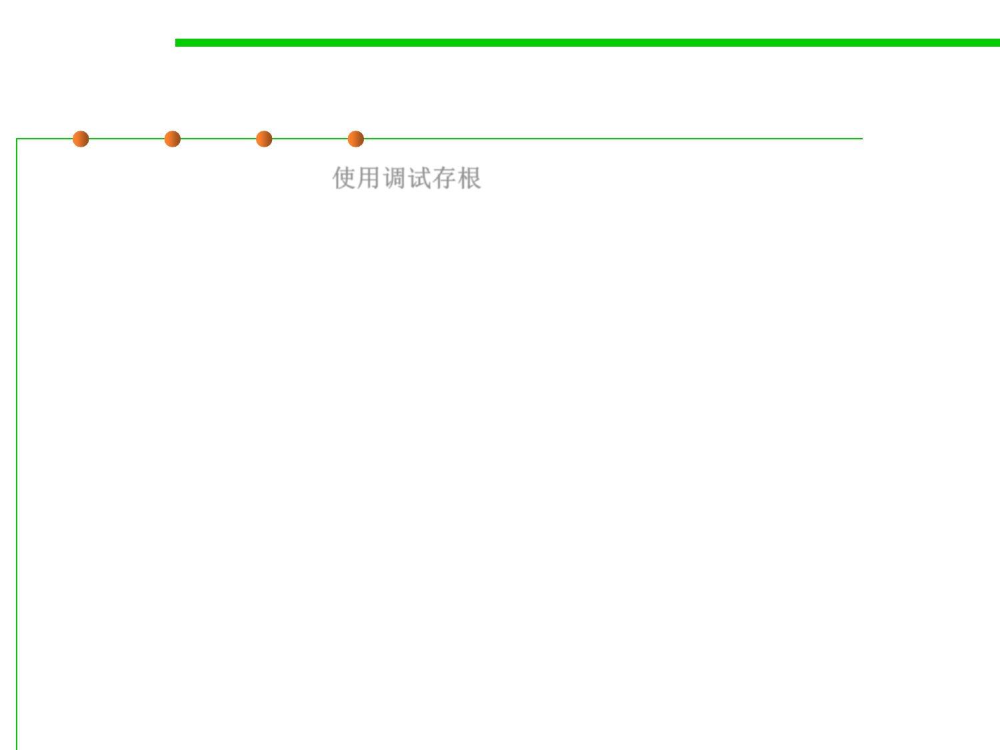

7.3 Assertions and Defensive Programming
Debugging Aids: Plan to Remove Debugging Aids
▪ Use debugging stubs使用调试存根
– In many instances, you can call a routine to do debugging checks.
– During development, the routine might perform several operations before
control returns to the caller.
– For production code, you can replace the complicated routine with a stub
routine that merely returns control immediately to the caller or performs
only a couple of quick operations before returning control.
– This approach incurs only a small performance penalty, and it’s a quicker
solution than writing your own preprocessor. Keep both the development
and production versions of the routines so that you can switch back and
forth during future development and production.
// check object passed in during development
void checkObject(someClass XXX){
…//check whether null
// check object passed in during production
…//check data format
void checkObject(someClass XXX){
…
// no code; just return to caller
…//check data integrality }
}